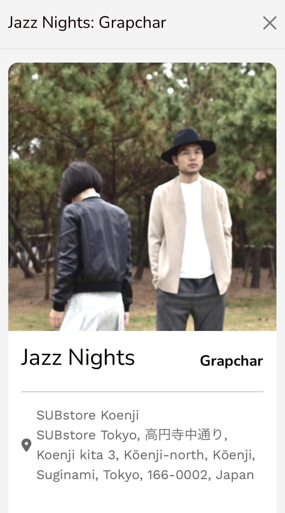
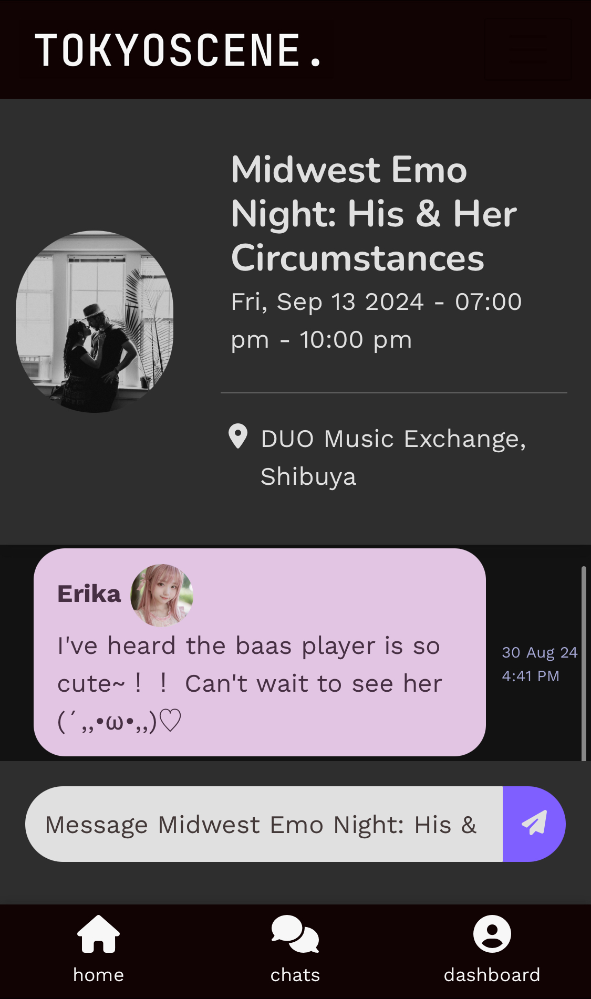
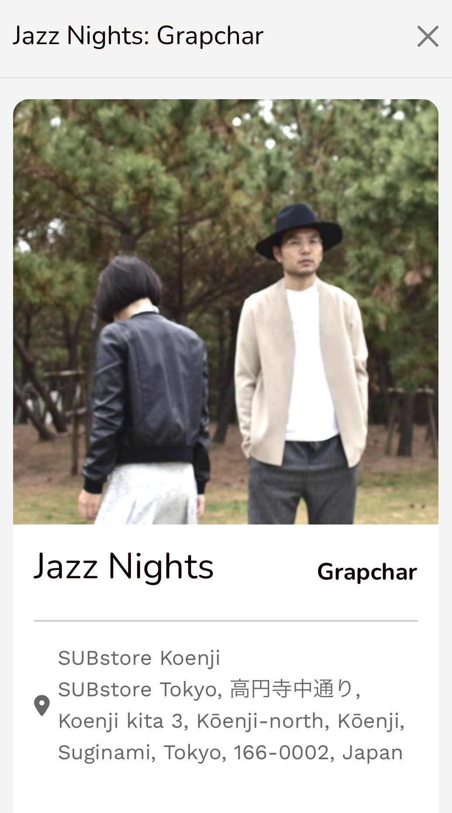
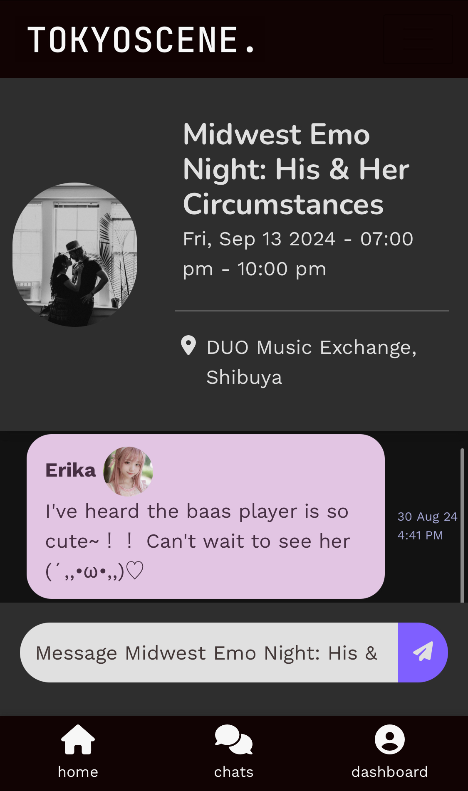

Featured Projects
Tokyo Scene
TokyoScene is a Ruby on Rails web application optimised for mobile devices, designed to aggregate and recommend music events in Tokyo. By integrating real-time Spotify data, it curates event recommendations based on users' music preferences, offering a personalised list of upcoming gigs.
Check it out! 




USpeak4Me
A web application built on Ruby on Rails that connects foreign-born residents in Japan with interpreters for Japanese to English (or other languages). It facilitates essential administrative tasks such as visiting city hall, apartment rentals, and making phone calls, bridging communication gaps for easier navigation of local services.
Check it out!